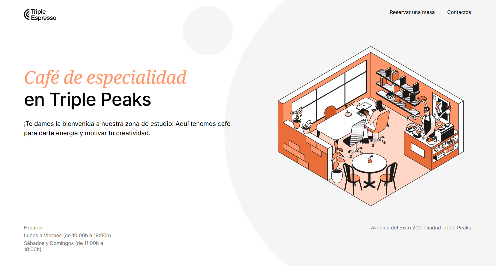

Estudiante Desarrollador Full-Stack
Luis Carlos
Matus Mejía
Luis Matus es un estudiante de Desarrollo Full Stack apasionado por la creación de sitios web funcionales y visualmente atractivos. Cuenta con conocimientos básicos en HTML y CSS, que utiliza para desarrollar interfaces bien estructuradas y fáciles de usar.
Se enfoca en la construcción de proyectos responsivos que se adaptan correctamente a dispositivos móviles, tabletas y computadoras. Destaca por su interés en el aprendizaje continuo y su compromiso con la mejora constante de sus habilidades técnicas.
Es una persona responsable, detallista y orientada a la calidad en cada proyecto que realiza. Su objetivo es seguir ampliando sus conocimientos para convertirse en un desarrollador Full Stack capaz de crear soluciones web completas y eficientes.
Habilidades
CSS
Git
GitHub
OpenAI
Proyectos

Página web de una cafetería
Desarrollo de una landing page responsiva para una cafetería siguiendo un brief de diseño. Incluye estructura semántica, maquetación con Flexbox, creación de secciones nuevas y un formulario de contacto funcional.
Implementé desde cero el diseño completo de la página, organicé el proyecto con buenas prácticas y publiqué la versión final utilizando GitHub Pages.